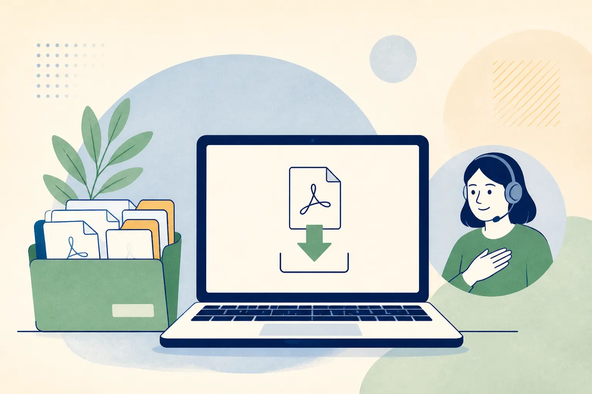

FactuSerein s'installe en quelques minutes. Compatible Windows 10 et Windows 11.

Téléchargement autonome, sans rendez-vous. Installez l'application et remplissez le parcours d'inscription. Après validation des informations et du virement, votre compte est activé ; vous déposez ensuite vos factures PDF et le logiciel transfère vos fichiers au service, qui les prépare, les contrôle et suit leur traitement pour le B2B France.
Périmètre actuel : factures B2B France uniquement. Le B2C et l'international ne sont pas pris en charge dans cette version.
Option facultative : si votre activité et votre régime de TVA le justifient, activez ensuite l'e-reporting de paiement dans « Réglages ». Vous saisirez uniquement les dates et montants encaissés ; aucune coordonnée bancaire n'est demandée.
Voir les écrans réels de l'application →
Installeur Windows 64 bits · Windows 10 et 11 · SHA-256 : manifeste signé (chargement…)
La signature de l'éditeur et le parcours de publication Microsoft sont en cours. La version actuelle peut donc être affichée comme « application non reconnue » : cela indique une réputation encore en construction, pas une certification Microsoft déjà obtenue. Vérifiez que l'installeur vient de cette page et comparez son SHA-256 avant de continuer. Ne désactivez pas SmartScreen ; une politique d'entreprise peut imposer l'intervention de votre administrateur.
L'application en situation
Ces captures proviennent des interfaces réelles de FactuSerein. Chaque écran correspond à une étape concrète : suivre les dépôts, vérifier une facture, retrouver un client ou contrôler les réglages.
L'application vous guide : entreprise, justificatif, accord formel et paiement par virement. Après validation, votre compte est activé et vous recevez votre clé de connexion par e-mail.
Un dossier « À envoyer » sur votre ordinateur. Vous y déposez vos PDF ; l'application les transfère au service. Vos factures reçues arrivent dans « Reçues ».
Le service suit le traitement et les éventuels rejets. L'application synchronise les factures reçues et vous donne accès à votre carnet de clients.